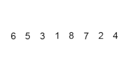
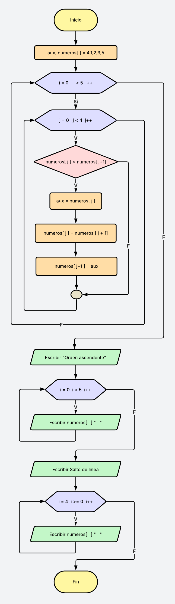
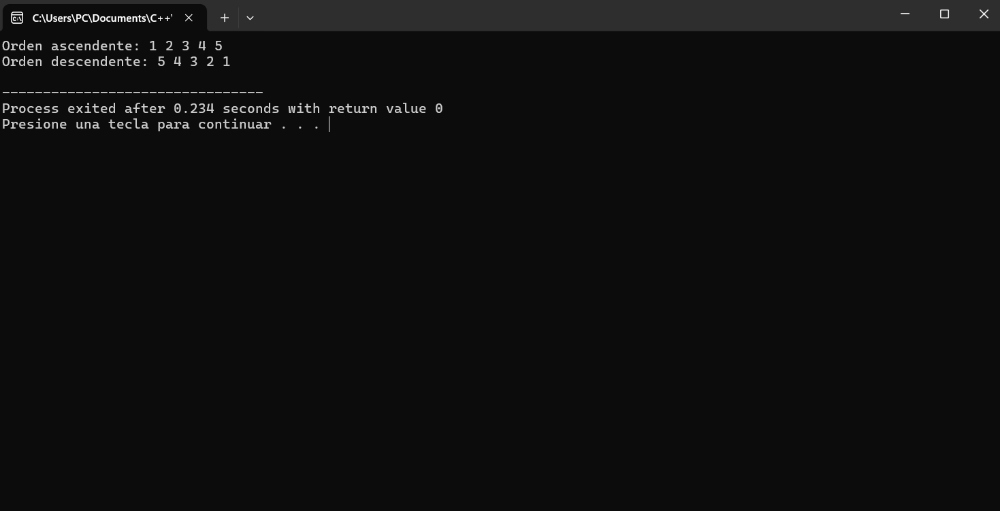

El ordenamiento burbuja es uno de los algoritmos de ordenación más sencillos. Funciona comparando elementos adyacentes y los intercambia si están en el orden incorrecto. Este proceso se repite hasta que la lista esté ordenada.
Para practicar el método burbuja, implementaremos un algoritmo mediante un diagrama de flujo y un programa en C++ para ordenar un conjunto de números enteros de forma ascendente. Luego, el programa deberá mostrar los números ordenados tanto en forma ascendente como descendente.
Para ello, utilice un arreglo de cinco elementos con valores predefinidos. Aplique dos bucles anidados para comparar y ordenar los elementos, asegurándose de intercambiarlos cuando sea necesario.

#include<iostream>
using namespace std;
int main (){
// Algoritmo del método burbuja.
int numeros[] ={ 4, 1, 2, 3, 5};
int aux;
for(int i = 0; i < 5 ; i ++){
for(int j = 0; j < 4; j++ ) { // Eviteamos el acceso fuera de rango
if(numeros[j] > numeros[j +1]){
aux = numeros[j];
numeros[j] = numeros[j + 1];
numeros[j +1] = aux;
}
}
}
// Mostrar el arreglo en orden ascendente
cout<<"Orden ascendente: ";
for(int i = 0 ; i < 5; i++ ){
cout<<numeros[i]<<" ";
}
cout<<endl;
// Mostrar el arreglo en orden descendente
cout<<"Orden descendente";
for(int i = 4 ; i >=0 ; i -- ) {
cout<<numeros[i] <<" ";
}
cout<<endl;
return 0;
}
El algoritmo burbuja usa dos bucles anidados por que: